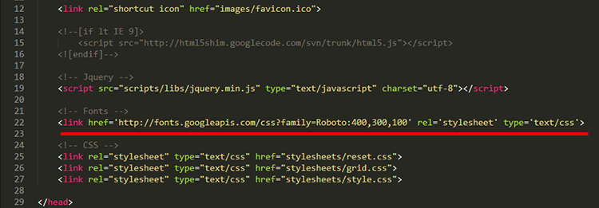
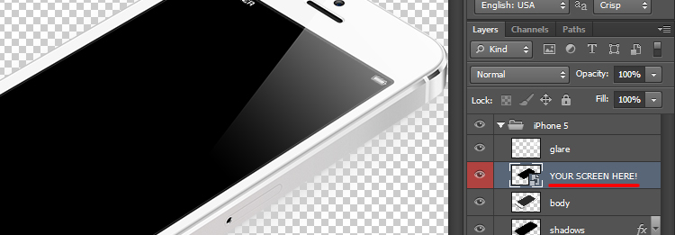
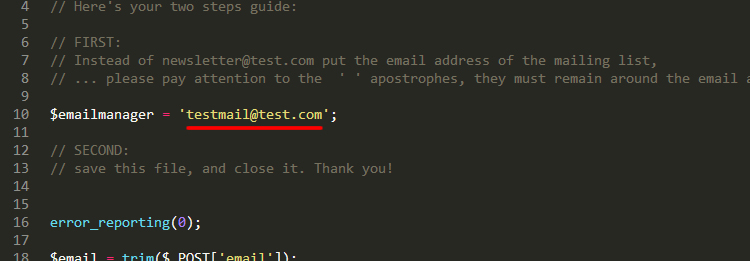

Created: 09/07/2013
By: Aether Themes
Email: contact@aetherthemes.com
Thank you for purchasing our theme. If you have any questions that are beyond the scope of this help file, please feel free to visit the dedicated support forum here. Thanks so much!
Installation is pretty easy. All you need to do is unzip the file, and upload the contents of the template folder to your server via FTP. You can learn more about using a FTP client over here.
You can custom pretty much everything in the theme.
In the root folder you will find the core html file of the landing page. Here is wherer you can edit the actual contet of you site.
The css files located in the stylesheets directory are the ones responsible for how your theme looks - here you can control the typography, paddings and positions of elements and colors.
CSS Files included:
The css files located in the scripts directory are the ones responsible for javascript effects and functions.
JS Files included:
The HTML is well structured with comments on every section you need to edit.
The fonts used are from the Google Web font library. You can change the font by editing the url provided in the HTML where marked and reflect that change in the css. To learn more and choose the perfect font for you site just head over to Google WebFonts.
For the device images setup you will need to edit the PSD files provided in the template in the _PSD directory. These are fully layered and all you need to do upon opening them is look for the colored layer indicating where your image should be pasted. When you are happy with the result just save as png or jpg and replace the images provided in the original download package.
Setting up the screenshot gallery and loupe effect is pretty self-explanatory. All you need to do is replace the original images with yours - just keeping their resolution the same as the one provided* in the package.
*the resolution is written on the images themselves
Setting up the subscription form requires only one line of text to be changed in the form.php file. You need to replace the test email with your own.
This theme was tested in a vast majority of browsers.
If you found a bug, please use the support forum or report it to us describing:
This theme is fully responsive and compatible with all major devices:
Once again, thank you so much for purchasing this theme. As noted at the beginning, we'd be glad to help you if you have any questions relating to this theme. No guarantees, but we'll do our best to assist. If you have a more general question relating to the themes on ThemeForest, you might consider visiting the forums and asking your question in the "Item Discussion" section.